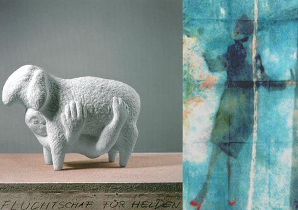

Details
Vernissage: 7. Dezember 2001
Eröffnung: Mag. art. Gerda Fassel (Bildhauerin)
Die Ausstellung war bis 14. Februar 2002 zu besichtigen.
Skulpturen und Bilder

Vernissage: 7. Dezember 2001
Eröffnung: Mag. art. Gerda Fassel (Bildhauerin)
Die Ausstellung war bis 14. Februar 2002 zu besichtigen.